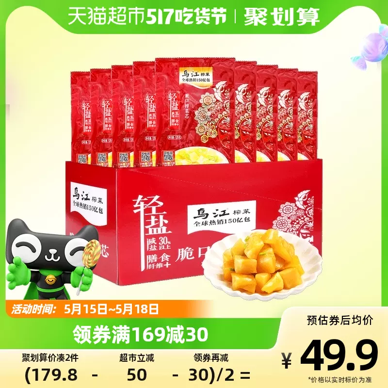
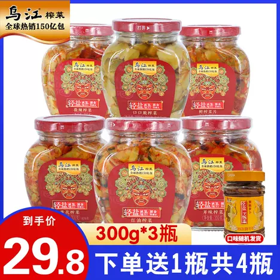
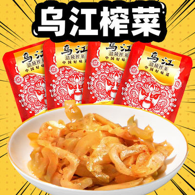
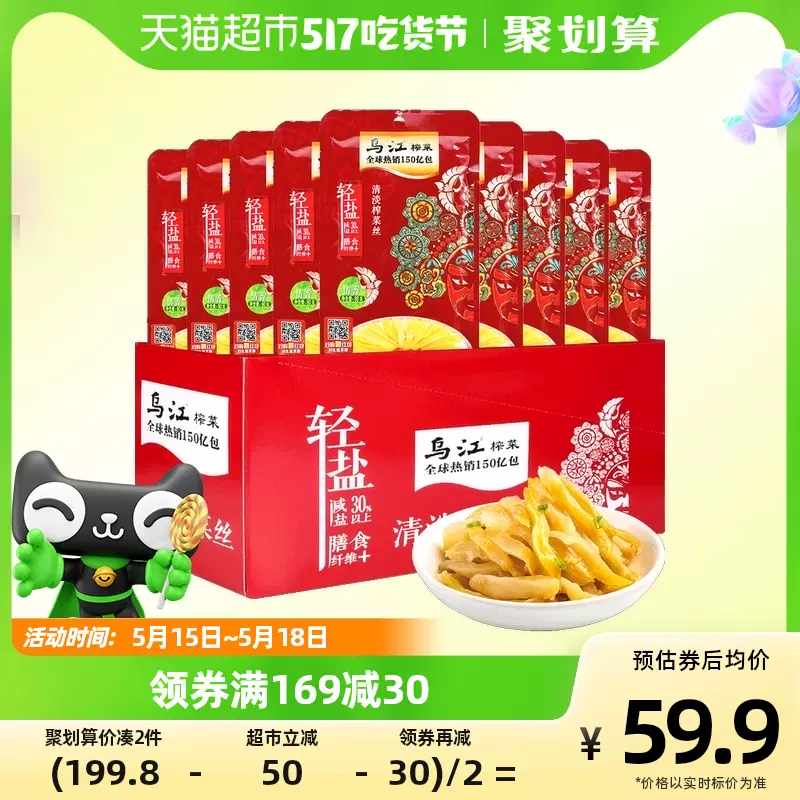
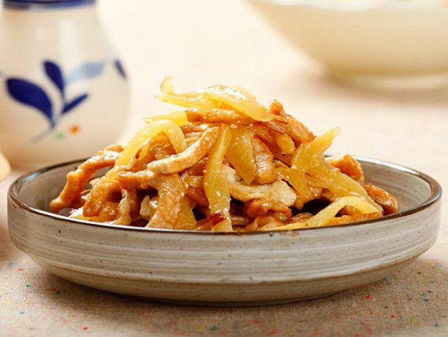
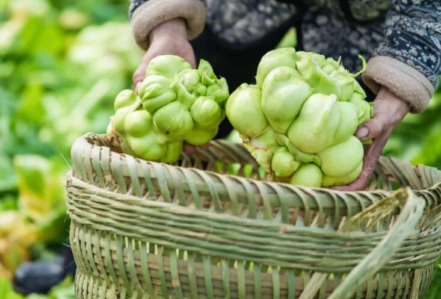

涪陵榨菜（fú líng zhà cài）
重庆市涪陵区涪陵区特产
中国国家地理标志产品
涪陵榨菜选用涪陵特有的青菜头，经独特的加工工艺制成的鲜嫩香脆的风味产品。与法国酸黄瓜、德国甜酸甘蓝并称世界三大名腌菜，
也是中国对外出口的三大名菜（榨菜、薇菜、竹笋）之一。其传统制作技艺被列入第二批国家级非物质文化遗产名录。

1899年，邱寿安专设作坊加工，扩大生产，并按其加工工艺过程将其命名为“榨菜”（意即“经盐腌榨制过的咸菜”）。“榨菜”一词从此诞生，这是“涪陵榨菜”之名的起源。
涪陵榨菜从诞生至清宣统元年（1909年）的10余年间，一直为邱家独家生产经营，直到宣统二年（1910年），其生产工艺才被泄漏并迅速传开，后逐渐形成一大行业，历久不衰。
1931年，涪陵的榨菜加工厂（户）已达100余家。
1940年，涪陵榨菜产量首次突破20万担，其销售市场已形成以上海、武汉为中心辐射南北，并以转销形式出口至香港、南洋群岛等地。
1949年后，随着市场发展的需要和人们对榨菜的喜爱，涪陵榨菜得到了较快发展，生产规模、销售市场日益扩大，影响与日俱增。
1953年，涪陵榨菜被国家纳入二类物资管理，由中商部直接计划调拨，成为定量供应各省、市、自治区以及军需、出口的主要商品。

1959年和1978年，中商部、全国供销合作总社先后两次在涪陵举办全国青菜头种植、榨菜加工培训班，并从涪陵抽派技术人员到全国各地指导生产，大力发展。从此，榨菜逐渐传到中国各省、市、自治区一些地方。
1995年3月，涪陵被国家命名为“中国榨菜之乡”；
2003年，涪陵被国家授予“全国果蔬十强区（市、县）”和“全国农产品深加工十强区（市、县）”；
2005年，“涪陵榨菜”通过国家质检总局原产地域产品保护审定。
2008年6月，“榨菜传统制作技艺·涪陵榨菜传统制作技艺”被国务院列为“国家级非物质文化遗产”保护名录；
2013年，“涪陵榨菜”被中国农产品区域公用品牌价值评估课题组评估认定其品牌价值为125.32亿元。
2014年，“涪陵榨菜”被中国农产品区域公用品牌价值评估课题组评估认定其品牌价值为132.93亿元。
2017年，“涪陵榨菜”荣获“2017年中国百强农产品区域公用品牌”称号。
最新相关信息
涪陵榨菜：2023年主要工作是品牌焕新及新品铺市上市
涪陵榨菜：5月11日融资净买入1324.35万元，连续3日累计净买入2757.81万元
涪陵榨菜：酱类市场空间广阔 公司目前以做大增量为目标
V观财报｜涪陵榨菜：泡菜、萝卜产品毛利率已超40％，仍有较大提升空间
云南省通报11批次食品抽检不合格，涉涪陵榨菜